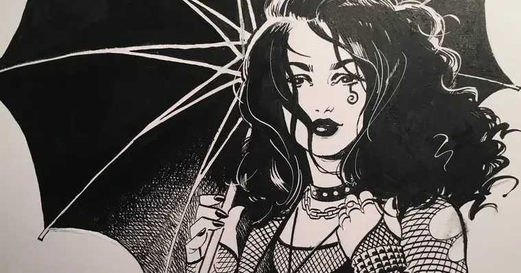

Morte
A Morte é a irmã mais velha de Sonho e a segunda mais velha dos Perpétuos.
Ela ama seu trabalho e o leva muito a sério. A morte, por sua própria admissão, nem sempre foi quem é agora. No começo dos tempos, ela achava que tinha o trabalho mais difícil entre os Perpétuos, e isso a deixou tão triste que, na verdade, ela parou de fazê-lo. Quando nada morreu, o caos reinou, e ela foi implorada para retornar ao seu reino. Ela fez isso, mas ficou "dura, fria e quebradiça por dentro".
Uma mostra disso pode ser vista no arco "Noites Sem Fim", em sua atitude arrogante e gelada. Seu comportamento não mudou até que ela foi convidada por alguém que ela coletou; Em "How would you like it?" Depois desta situação, resolveu viver um dia como mortal para ver como gostava e o que podia aprender. Foi só depois de seu gosto pela mortalidade que ela mudou a maneira como pensava sobre seu trabalho. Ela decidiu que, no final, a maioria ficaria feliz pela companhia de um amigo, e foi isso que ela tentou se tornar, uma amiga para aqueles que ela leva.
Desde então, a personalidade da Morte ficou amigável, otimista e atenciosa.
INICIO